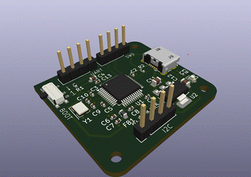
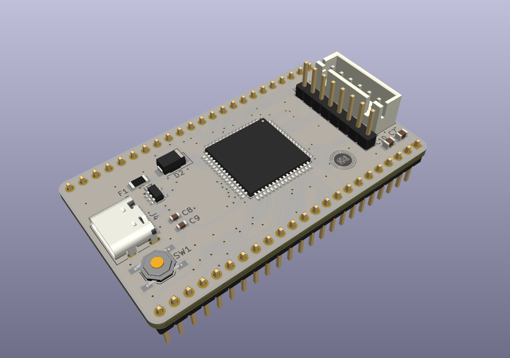

Executive Summary: Built a pocket-sized, high-speed 8-channel digital logic analyzer leveraging the DMA and hardware timer architecture of an STM32 ARM Cortex-M4 microcontroller. Streams digital logic captures at sampling rates up to 24MHz across 8 parallel GPIO pins using double-buffered circular SRAM acquisition, streaming packets over USB Virtual COM Port (VCP) to the open-source Sigrok / PulseView protocol analyzer suite.
01Project Motivation & Instrumentation Needs
Debugging high-speed digital communication protocols (SPI, I2C, UART, 1-Wire) in embedded systems projects requires a logic analyzer. Commercial instruments like Saleae are expensive, while cheap clone analyzers often suffer from flaky USB drivers and unbuffered packet loss.
I engineered a dedicated, low-cost 8-channel logic analyzer using the high-performance DMA (Direct Memory Access) architecture of the STM32 microcontroller, capturing clean digital traces with zero CPU overhead.
02Timer-Triggered DMA Parallel Capture Pipeline
The core acquisition engine operates entirely in hardware without CPU cycle consumption:
- Parallel GPIO Port Sampling: Grouped 8 input pins on GPIO Port A (pins 0 through 7). A hardware Timer (TIM1/TIM2) generates precise clock triggers up to 24 MHz.
- Circular DMA Streaming: Each timer event triggers a DMA request that transfers the entire 8-bit GPIO input data register (IDR) directly into a circular SRAM double-buffer. While DMA fills Buffer A, the USB peripheral transmits Buffer B to the host computer, eliminating sample dropouts.
- Input Clamping & 5V Tolerance: Inserted 100 Ω current-limiting series damping resistors and Schottky clamping diodes on each channel, allowing safe connection to both 3.3V and 5V logic buses without damaging the STM32 pins.
03Sigrok / PulseView Protocol Compatibility
Host software integration and trigger firmware:
- Standard Protocol Emulation: The STM32 USB Virtual COM Port implements the standard Openbench Logic Sniffer (OLS) / Sump protocol. This allows immediate plug-and-play compatibility with Sigrok and PulseView without custom device drivers.
- Hardware Edge Triggering: Configured flexible pre-trigger and post-trigger ring buffering. The analyzer captures continuous data and freezes the buffer upon detecting rising, falling, or pattern matching triggers.
- Zero CPU Overhead: By offloading both pin acquisition and USB transmission to DMA channels, the Cortex-M4 CPU remains virtually idle during full 24MHz data acquisition.
04Protocol Decoding & Acquisition Accuracy
Bench validation against high-speed digital buses:
- Successfully captured and decoded 12 MHz SPI bus communications with zero bit errors or frame dropouts.
- Accurately decoded I2C bus transactions, UART packets up to 3 Mbaud, and PWM signals with sub-42 nanosecond timing resolution.
- Cost less than $8 to build while matching functionality of entry-level commercial analyzers.
05Visual Gallery & Technical Artifacts
Comprehensive photographs, schematics, 3D CAD models, and instrumentation traces extracted directly from the engineering project portfolio:

